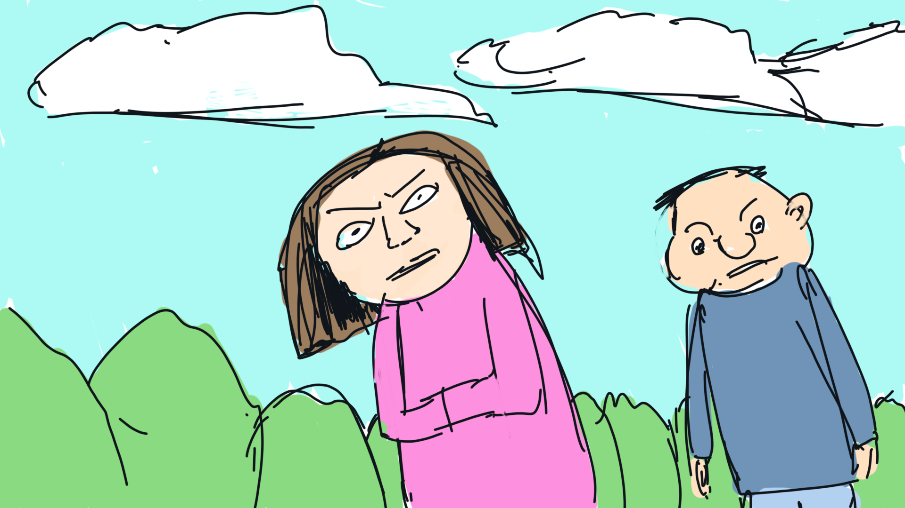
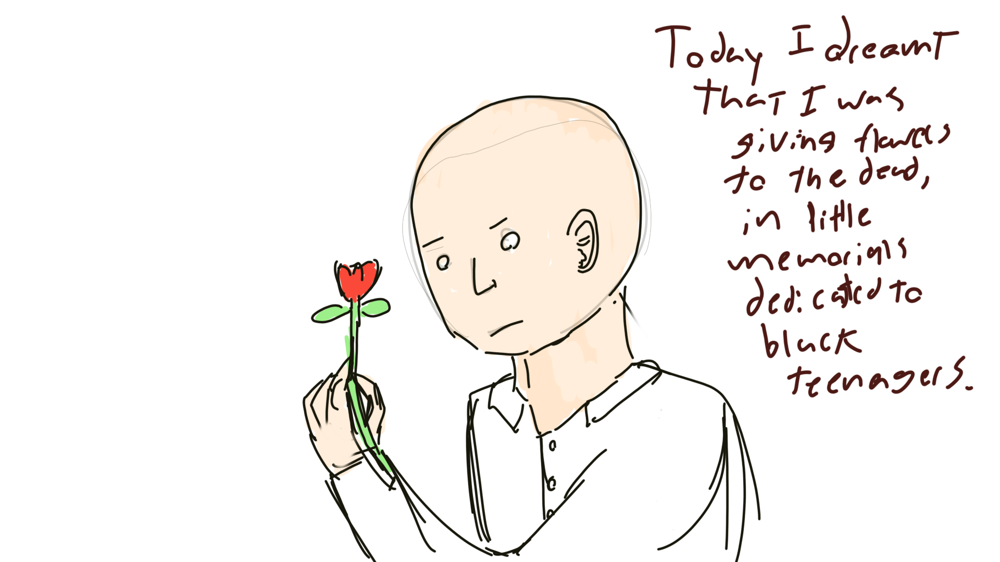

A new year a new drawing! I have been at this for one year and two months now and things are looking alright. My drawings have gotten a little better and I'm rolling up on my last term of university! lets hope this year is a good one!
January 2nd 2024
Nearly lost all of my pictures after August. I moved my files onto an SD card and said SD card ejected itself randomly from the computer today. Very scary! I am keeping the files locally on the computer now.
January 3rd 2024
Had a board gaming night at a friend's house today. Played a game called Flame Craft which was all about tiny dragons working in shops. A very cute game.
January 4th 2024
Helped a friend train for a tournament in the board game Dune imperium today. Ended up spending most of the day on board gaming. Had a real breakthrough in terms of working on this piece, in that I felt no reservation at all about making it. The trick was drawing something that I wanted to draw, which sounds like a small step to make, but could make a big difference for keeping my stamina high in the future of this collection. Previously I would "just start with a line", or "just start with a figure", which leads to boring drawings, and brings my mood down.
January 5th 2024
Have to spend today making a logo for a club, so not much time for drawing today.
January 6th 2024
xx
Kind of a weird one today.Hope I make more.
January 7th 2024
Sometimes you just feel like drawing a flower and a butterfly. Start my first day of class tomorrow for the spring 2024 term - advanced web design 339.
January 8th 2024
Started the first day of web design class today. It seems to be a good course so I am glad to take it. Also glad that I cut back on extra curricular activities this term, even though I still had morris practice today.
January 9th 2024
Starting a web design class, which might mean that the quality of the pages I make here may increase steadily. I have also put the style guides to these pages under a monthly listing rather than making a separate style guide for each page, which means that the quality of the previous pages may also increase drastically.
January 10th 2024
Ended up sleeping till 3:00 again and waking up suddenly to finish my drawings. Very odd thing to do.
January 11th 2024
With the matching uniform you might think that these characters are all police officers, which was the intention, but they could also all be private school attendees, or gangsters.
January 12th 2024

Have not done one like this in a while. Not sure how to feel about it.
January 13th 2024
Was out board gaming again today. Really should have been studying.
January 14th 2024
I had to get to bed early so I cheated in the background and did not do work to make the character look better.
January 15th 2024
While I was still doodling (drawing based on a random baseline) I started a more interesting seed than normal and ended up with a more interesting result. I usually start my doodle sketches with a circle of some sort, and started this one with two vertical hook shapes. I am wondering about the default canvas size I use for these drawings (1920 / 1080), since it dictates certain types of content on the horizontal canvas.
January 16th 2024
Did some concept art and story board art for a game design course. You can see the storyboard here.
January 17th 2024
Look at the face on the little guy. How could you say no to a face like that?
January 18th 2024
I like the clouds in this one. I'll take them as a win.
January 19th 2024

The full dream was a sort of long graduation ceremony, following a strange set of sports games. There was also a part where waves came crashing through the ground story window of an apartment building.
January 20th 2024
I worry that these little captions could be used to profile me if I ever published these websites and images online in the form they are in now, so I am not sure what to write here anymore. I typically reveal quite a bit about myself here, which I am somewhat scared of now after seeing videos on the sorts of things trolls can determine based on a video feed alone. It makes me hesitant to post this collection online in full as it is. That and the fact that someone could use my off days to rip into me makes this not the most appealing choice.
January 21th 2024
In a meeting. No time to draw!
January 22th 2024
Drew this one at a strange angle
January 23th 2024
Having a meeting for a game jam. We still have not decided on a game!
January 24th 2024
One thing I can't quite figure out for my big eyed cyclops characters is where exactly their brain cavity is. They're heads seem to be mostly eye socket.
January 25th 2024
Woke up and made this late a night. Still a bad habit but atleast I am drawing every day this way.
January 26th 2024
Making progress on the game jam. Slow progress but still progress.
January 27th 2024
Just realized that I suck at rigging in blender, despite takeing courses in how to do it in maya. Kind of a low blow (in a way) but I supose it is different applications.
January 28th 2024
This simple sketch used a total of four layers! I add layers now as an instinct, Even for stuff like this. An alternative to layers is colour ordering where you fill in your background colour first layer the sketch using brush overlap, which I might try next time.
January 29th 2024
Learned about flex boxes in class today (a web design tool), so expect the look and interactivity of these pages to change over the next couple of weeks (This is not yet online so you will likely never see my original layouts!)
January 30th 2024
Again I am wondering at the wisdom of these little captions.
February 31th 2024
I meant to get more done today but somehow I spent the entire day doing things other than homework. Really need to figure that out. HOME